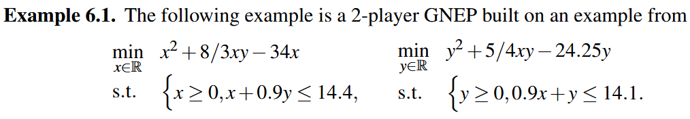

Projected dynamical system with moving set
It is possible to apply the PDS framework to constraint set that depend on the state x. One example is the study of nonsmooth dynamics in game theory.
In Migot, T., & Cojocaru, M. G. (2020). Nonsmooth dynamics of generalized Nash games. J. Nonlinear Var. Anal, 1(4), 27-44., the authors study a nonsmooth dynamics whose stable points are generalized Nash equilibrium for noncooperative games.

using LinearAlgebra, SparseArrays
using NonSmoothDynamics
using PlotsFirst, define constants relative to this example.
F(x) = -[
2 * x[1] + 8/3 * x[2] - 34;
2 * x[2] + 5/4 * x[1] - 24.25
]
function project_moving_set!(sol, y; x = x, kwargs...)
λ = similar(sol)
Ain = I
bin = [14.4 - 0.9 * x[2]; 14.1 - 0.9 * x[1]]
proj_success = NonSmoothDynamics.numerical_projection!(
λ, y, I,
spzeros(0, 2), ones(0),
Ain, bin,
zeros(2), Inf * ones(2))
sol .= λ
return proj_success
endproject_moving_set! (generic function with 1 method)Simulate the PDS
Run the reaction with 300 discretization point between 0 and 30.
x0 = zeros(2)
t0, tf = 0.0, 30.0
x_vals, t_vals, converged = NonSmoothDynamics.projected_dynamical_system(
x0, F, project_moving_set!,
t0, tf, 300
)
println("Final State: ", x_vals[:, end], "is close to the known Nash equilibrium [5, 9]")Final State: [5.024119887796687, 8.983486241711578]is close to the known Nash equilibrium [5, 9]Visualization
To plot the trajectory:
using Plots
plot(t_vals, x_vals[1, :], label="x₁ function of time", color=:red, markersize=4)
plot!(t_vals, x_vals[2, :], label="x₂ function of time", color=:green, markersize=4)